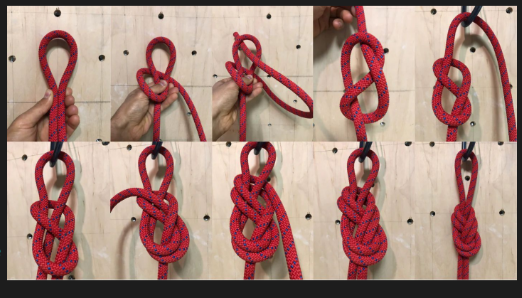
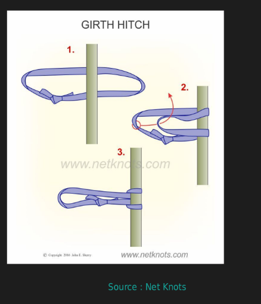
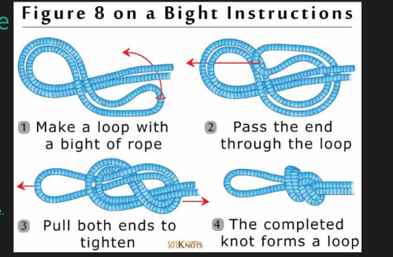
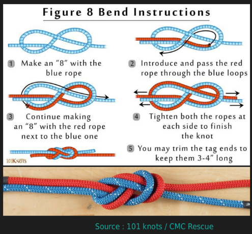
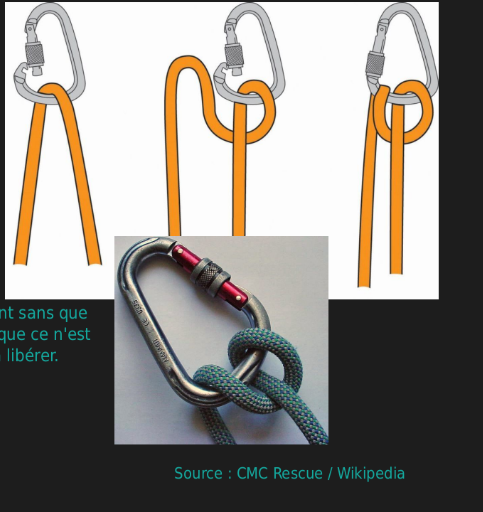
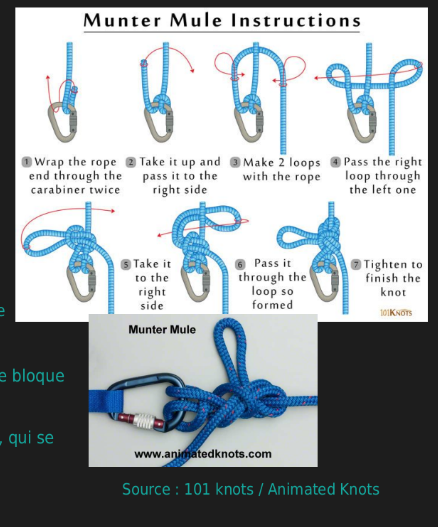
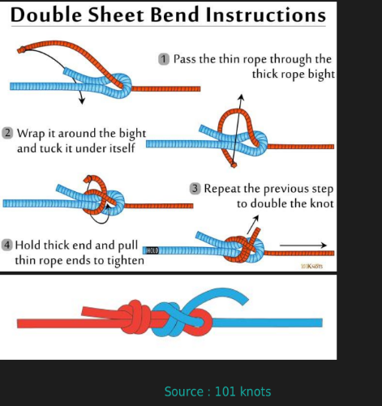
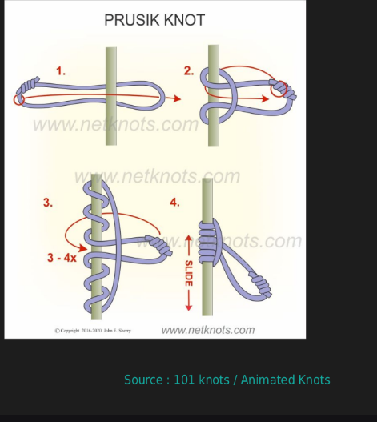
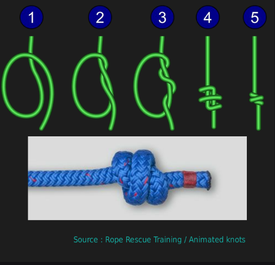

Nœuds de base pour la highline
Nœuds de base pour la highline
Il existe une très grande variété de nœuds ; beaucoup peuvent avoir des applications similaires entre eux, et en général en connaître davantage ne fera qu’apporter une boîte à outils plus polyvalente pour résoudre les nouveaux problèmes qui se présentent.
Quand on débute, il vaut mieux connaître quelques nœuds très bien que beaucoup superficiellement.
Bien connaître un nœud va au-delà de savoir le faire correctement : cela veut dire savoir à quoi il sert, comment l’inspecter et quels sont ses modes de défaillance.
Savoir faire une bonne variété de nœuds est essentiel pour la pratique de la highline.
Pour ce séminaire d’introduction, je me concentrerai sur le fait que vous reconnaissiez les nœuds suivants et leur fonction en highline, et que vous puissiez les étudier et les pratiquer par vous-mémes. Vous trouverez des liens et des vidéos dans la section "Noeuds" de la page ressources . Voir aussi le pdf Le Guide des Noeuds et des Amarrages qui reprend en détail la plupart des noeuds utiles pour les cordistes.
- Huit tressé
- Tête d'alouette
- Huit double
- Huit de jonction
- Noeud de pecheur double - Demicabestan
- Cabestan - Nœud de chaise et noeud de chaise double - Nœud de mule avec noeud d'arrret sur un demi cabestan
- Nœud de mule avec noeud d'arrret sur un demi cabestan

- Nœud de Tisserand double
-Noeud de Prussik ou autre autobloquant (machard..
- capucin , Stopper knot (noeud darrêt)
- Papillon Alpin -Bunny ou Fusion
Sans oublier bien sur le noeud antislip , l'installation d'un mightylock, le frost knot et le Unfinished 9 plus spécifiques à la slackline.
HUIT TRESSÉ
FONCTION :
Sa fonction principale est d’attacher le leash au baudrier ; c’est pourquoi c’est le premier nœud que tout highliner doit apprendre.
se connecte aux deux points d’attache (ceinture et cuissards) du baudrier.
INSPECTION ET DEFAILLANCE
- On doit pouvoir compter 5 paires de lignes parallèles de chaque côté. C’est un nœud très résistant et difficile à défaire même s’il n’est pas bien peigné ; sa principale possibilité de défaillance est donc quand il n’est pas tissé complètement.
- Une autre forme de défaillance possible est un excédent trop court (laisser au minimum une paume de distance)
> **TO BE CONTINUED** Ressources complémentaires
Pour approfondir les sujets abordés dans ce guide, consultez le catalogue centralisé :